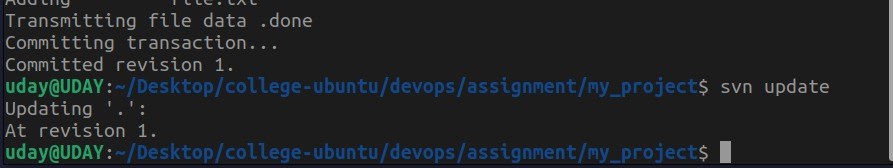
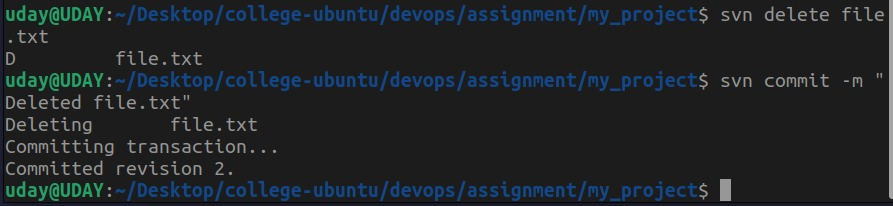
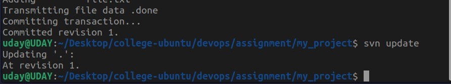
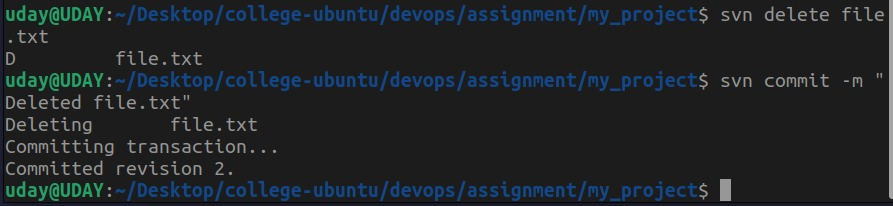

What is Subversion (SVN)?
Apache Subversion (SVN) is a centralized version control system that allows developers to track changes to files and directories over time. It is widely used for managing source code and collaborative projects.
Installation
To install Apache Subversion on your system, you need to update your package list and install the
subversion package. This can be done using the following commands:
sudo apt update
sudo apt install subversion
If you are using the Nix package manager, you can install SVN with additional tools like
tkrev using:
nix-shell -p subversion subversionClient tkrevCreating a Local Repository
A repository is a central storage location where all versions of your files are stored. To create a local SVN repository:
- Create a directory for your repository:
- Initialize the repository using the
svnadmincommand:
mkdir ~/svn_reposvnadmin create ~/svn_repo/my_project
Basic SVN Commands
Checkout a Repository
To create a working copy of the repository on your local machine, use the svn checkout
command:
svn checkout file:///home/uday/svn_repo/my_projectAdd Files to the Repository
To add new files to the repository, navigate to your working directory and use the svn add
command. Then commit the changes:
svn add file.txt
svn commit -m "Added file.txt"Update Your Working Copy
To sync your working copy with the latest changes in the repository, use the svn update
command:
svn updateDelete Files
To remove a file from the repository, use the svn delete command and commit the changes:
svn delete file.txt
svn commit -m "Deleted file.txt" 



Access Control
To enable authentication for your SVN repository, edit the svnserve.conf file and set the
following options:
anon-access = read
auth-access = write
password-db = passwd
You can also edit the passwd file to add users and passwords.
Svnserve
To start the svnserve daemon run svnserve command.
sudo svnserve -d -r /var/svn/repos
The -d flag runs it in daemon mode, and specifies the root directory for repositories.
You can also edit the passwd file to add users and passwords.
Task 1: Check out a Repository
To check out the repository to your local machine, run svn checkout command.
svn checkout svn://localhost/myrepo --username aliceTask 2 Creating trunk on the Server Side
If you have direct access to the SVN server (e.g., via SSH or file system access), you can create the
directly in the repository.
Steps:
1. Access the SVN Repository Directory:
• Navigate to the directory where your SVN repository is stored on the server. For example:
Run the following for making a trunk Directory
cd /path/to/svn/repositories/myrepo
svn mkdir file:///var/svn/repos/myrepo/trunk -m "Creating Trunk Directory"svn list file:///var/svn/repos/myrepo